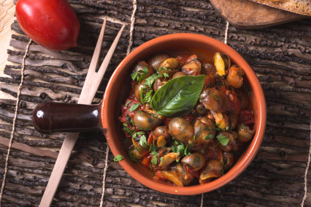

Simple Snail Soup
Retrun home

Ingredients
- Any pre-made broth
- Snails (Any of your choosing)
- A really good attitude
Steps
1. Boil the pre-made broth of your choosing.
2. Optional whether you would like to de-shell your snails or not.
3. Pour snails into broth and let simmer for no more than 15 minuts .
4. Enjoy your brand new struggle meal and pray that its your last!